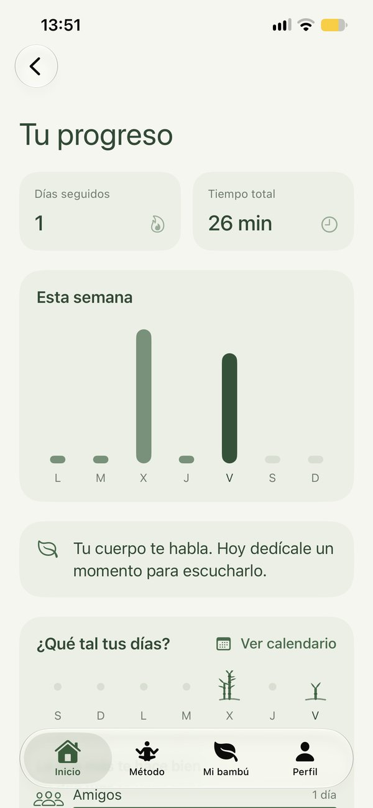
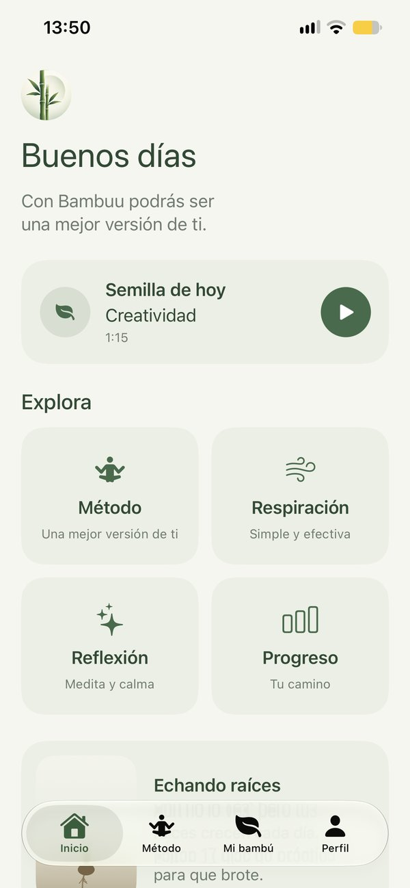
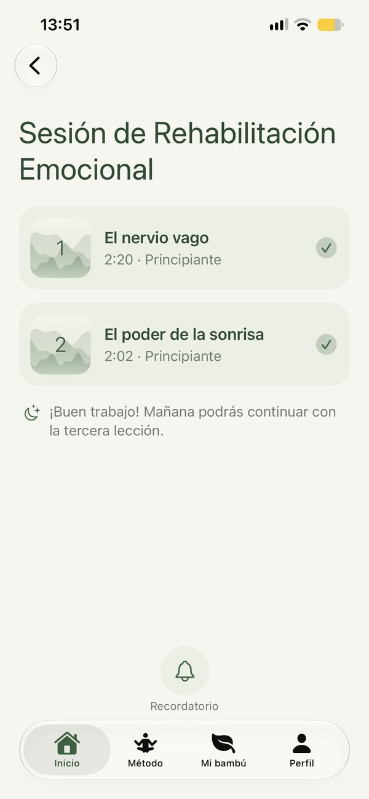

Mi Bambuu
Cada emoción, un progreso.
Meditación guiada, respiración y reflexión. Cada día que practicas, tu bambú echa raíces y crece contigo.
Para iOS y Android



Primero, las raíces
El bambú japonés pasa años sin apenas asomar mientras echa raíces profundas. Cuando está listo, crece de golpe.
En Mi Bambuu funciona igual: cada día que practicas, te cuidas. Tu bambú echa raíces, crece y, con el tiempo, se convierte en un bosque.
Un hábito que se ve
Las primeras semanas tu bambú trabaja bajo tierra. Si sigues practicando, brota y crece; si lo dejas, se nota. Cuando tu progreso aumente, crecerá otro a su lado.
Qué encontrarás
Todo pensado para que te lleve solo unos minutos al día.
Una semilla cada día
Un audio breve de dos o tres minutos para empezar el día con calma. Gratis para todos.
Sesión de Rehabilitación Emocional
Nuestro método, clase a clase: una explicación y después su meditación guiada. Cada semana tendrás una clase nueva y te recomendamos repetir su meditación varias veces hasta la siguiente.
Respiración
Ejercicios guiados con vibración suave para que sigas el ritmo sin mirar la pantalla.
Reflexión
Reflexiona sobre ideas positivas de tu día.
¿Qué tal tu día?
Anota cómo te sientes y lo positivo del día. Con el tiempo descubrirás lo que más te hace bien.
Recordatorios
Elige qué días y a qué hora quieres que la app te recuerde tu momento.
Gratis para empezar
Las semillas diarias, la respiración, la reflexión, el diario y la primera clase del método son gratis. Para seguir con el método completo, con una clase nueva cada semana, hay una suscripción mensual de 4,99 €, que puedes cancelar cuando quieras desde los ajustes de tu dispositivo.